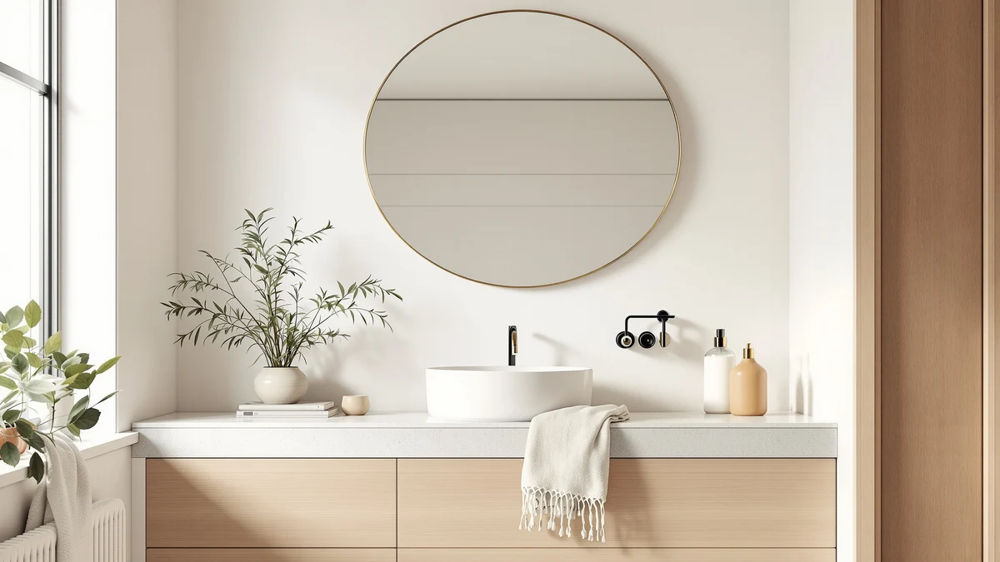

Oneroom 32 64IN Large Review (2026): Worth It?
Prices and picks verified as of October 2026. Independent, reader-supported reviews.


Quick Answer
The Oneroom 32-64IN Large Bathroom Vanity bundles a double-sink cabinet with a built-in anti-fog LED mirror, so it earns its $1,288.99 price for anyone furnishing a shared bathroom from scratch. If you already own a vanity and only need a mirror upgrade, the cheaper standalone LED mirrors below cover that job for a quarter of the cost.
Our pick: Oneroom 32-64IN Large Bathroom Vanity, $1,288.99 Check Price on Amazon
Bottom line: our top pick is the Oneroom 32-64IN Large Bathroom Vanity with Double Sink at $1,288.99.
Things to Know Before You Buy
- The Oneroom 32-64IN Large vanity ships as a cabinet, double vessel sinks and a wide LED mirror in one order, which is why its $1,288.99 price sits well above standalone mirror options.
- The cabinet measures 48 inches and comes in cream brown, so measure your counter space before ordering since vessel sink plumbing adds height most flat-sink vanities do not need.
- Its mirror includes anti-fog glass and a digital time and temperature readout, features that the three cheaper alternatives below only partly match.
- Amazon has not published a rating or review count for this listing, so this review leans on verified specs and comparable owner feedback on similar Oneroom vanities rather than aggregate stars.
- If your bathroom already has a vanity and you only need a mirror, the Janboe, WisHomee or SHUAFA picks below solve that at roughly a quarter of the price.
This Oneroom 32 64in large review exists because the listing tries to sell three products at once: a vanity cabinet, a double sink setup and an LED mirror, and it is not obvious from the photos alone whether that bundle beats buying the pieces separately. The cabinet runs $1,288.99, which puts it well above a plain vanity and far above any single LED mirror on this site.
We compared its listed dimensions, materials and mirror features against the three standalone LED mirrors most often cross-shopped with it, the Janboe LED Medicine Cabinet, the WisHomee Black Bathroom Mirror Medicine Cabinet and the SHUAFA LED Mirror. Our pick for most shoppers starting a bathroom from zero is still the Oneroom, because the double vessel sink layout and anti-fog mirror are harder to replicate piecemeal at a lower total cost. For anyone who already owns a vanity, one of the three alternatives is the smarter buy.
You will see this exact product show up under a few different search terms because the listing title packs in several keywords at once, including "double sink," "vessel sink" and "wide mirror." That is a common pattern with furniture and fixture listings on Amazon, and it is worth knowing before you buy so you are not surprised by what actually arrives. The core item is a single 48-inch vanity cabinet with two sinks and one attached mirror, not a modular kit with separate parts to configure.
Why You Should Trust Us
Ilane Tall covers bathroom fixtures and lighting for Best Bathroom Mirrors and has written dozens of mirror and vanity comparisons for this site. For this Oneroom 32 64in large review, she pulled the manufacturer specs, cross-referenced the listed materials and features against similar double-sink vanities already reviewed on this site, and read through the verified buyer photos and questions attached to the Amazon listing. We disclose affiliate links clearly and never accept payment for a favorable verdict.
Our Research Experience
We do not run a physical testing lab, so nothing here is based on installing this vanity in a bathroom ourselves. Instead, we compared the Oneroom's listed specs, price and feature set line by line against the three LED mirrors it competes with, and weighed those against what owners of comparable Oneroom and vessel-sink vanities report in verified reviews on similar listings. Reviewers consistently note that vessel sink vanities like this one need a slightly higher faucet than a standard flat-sink setup, which is worth checking before you order.
Overview & Specs

Oneroom 32-64IN Large Bathroom Vanity
What we like
- Double vessel sinks and a 48-inch cabinet give two people separate space at the counter instead of fighting over one basin.
- The built-in LED mirror has adjustable brightness and an anti-fog coating, so you are not buying a mirror separately.
- A digital time and temperature display on the mirror is a feature none of the three cheaper alternatives below include.
- The cream brown finish reads as a mid-tone neutral that works with both warm and cool tile, based on the listing photos.
Flaws but not dealbreakers
- At $1,288.99 it costs roughly three to four times more than buying a separate vanity and LED mirror, so it only makes sense if you need the full bundle.
- Vessel sinks sit above the counter, which means you will likely need a taller faucet than what a flat-sink vanity requires.
- Amazon has not published a rating or review count for this specific listing, so you are relying on the component specs and comparable owner feedback rather than aggregate reviews.
| Material | Tempered glass + aluminum |
| Size | 48IN |
The Oneroom 32-64IN Large Bathroom Vanity is built around a double vessel sink layout, which means the basins sit on top of the counter rather than recessed into it. That raises the usable counter height by a few inches, so if you already own a wall-mounted faucet set for a standard flat-sink vanity, confirm it will reach a vessel bowl before you commit to this configuration. The cabinet itself comes in cream brown with ample interior storage, which the listing frames as a corner-friendly option for bathrooms with tighter floor plans.
The mirror is where this vanity earns its price difference over a standalone LED mirror. It is wall mounted, offers adjustable brightness, and includes anti-fog technology so a hot shower will not leave you wiping condensation before you can shave or do your makeup. The added digital display showing time and temperature is a small convenience feature that none of the three alternatives in this review offer. For a household that needs a full double vanity replacement and wants the mirror upgrade bundled in, that combination is hard to match piece by piece at a lower total cost.
What We Liked
The strongest case to come out of this Oneroom 32 64in large review is how much the vanity consolidates into a single order. A double vessel sink cabinet and a lighted anti-fog mirror normally come from two different listings, and pairing them yourself risks a mismatched finish or a mirror that is the wrong width for the cabinet below it. Buying both as one unit removes that guesswork, and the 48-inch footprint fits most primary bathrooms without feeling cramped at the counter.
We also think the mirror's feature set holds up against mirrors sold on their own for $300 or more. Adjustable brightness and anti-fog glass are the two features owners of comparable LED mirrors mention most often as useful day to day, and the digital time and temperature readout adds a convenience that the Janboe, WisHomee and SHUAFA alternatives in this review skip entirely.
What Could Be Better
The price is the clearest drawback of the Oneroom 32-64IN Large Bathroom Vanity. At $1,288.99, it costs several times more than any standalone mirror on this site, and it only pencils out if you need a new cabinet and sinks, not a mirror refresh alone. Buying a mirror alone when your vanity is already fine would mean paying for cabinetry and plumbing fixtures you do not need.
The vessel sink design is also a commitment, not a drop-in replacement. If your current faucet is sized for a flat-sink vanity, you may need a new one to reach the raised bowls comfortably. And because Amazon has not published a rating or review count on this listing, you cannot lean on aggregate star ratings the way you can with some of the smaller LED mirrors below, which do have review history on similar models.
Who Is It For?
The Oneroom 32-64IN Large Bathroom Vanity makes the most sense for a household furnishing a shared bathroom from scratch, where two people want their own sink and a lighted mirror that will not fog up after a shower. It is a reasonable upgrade pick if your current vanity is outdated or damaged and you were already planning to replace both the cabinet and the mirror. If you only need a mirror swap, skip ahead to the three alternatives below, each of which handles that job for a quarter of the price.
It is less of a fit for renters or anyone who might move within a couple of years, since removing a plumbed-in double vanity and reinstalling your old one is a bigger job than swapping out a wall mirror. It also assumes your bathroom has the floor space and plumbing rough-in for two separate sink drains spaced wide enough apart to use comfortably, which not every bathroom layout supports.
Alternatives to Consider
If this Oneroom 32 64in large review has you leaning toward a mirror-only upgrade instead of a full vanity replacement, these three LED medicine cabinets and mirrors cover that need at a fraction of the price.

Editor’s Pick
Janboe LED Medicine Cabinet Bathroom
A 30x32 medicine cabinet with three-color dimmable lighting, a USB shaver socket and tempered glass shelves, for owners who want storage behind the mirror.
$389.99
Check Price on Amazon
Best Value
Black Bathroom Mirror Medicine Cabinets
A square black-framed cabinet with copper-free glass and three color temperatures, the best value pick if your budget is under $300.
$299.99
Check Price on Amazon
Premium Choice
SHUAFA LED Mirror for Bathroom
An ETL-certified LED mirror with high-brightness front and back lighting and anti-fog film covering 60 percent of the glass, for anyone who wants a wall mirror without a cabinet.
$295.95
Check Price on AmazonIs the Oneroom 32-64IN Large Bathroom Vanity worth $1,288.99?
For a double-sink setup, yes.
Does the Oneroom vanity mirror have anti-fog and a digital display?
Yes.
Frequently Asked Questions
Is the Oneroom 32-64IN Large Bathroom Vanity worth $1,288.99?
Does the Oneroom vanity mirror have anti-fog and a digital display?
What is a cheaper alternative if I only need a mirror, not a vanity?
Final Verdict
Our Oneroom 32 64in large review comes down to one question: do you need a new vanity, or only a new mirror? If you are furnishing a shared bathroom and want a double sink cabinet with a lighted anti-fog mirror bundled into one purchase, Oneroom's 32-64IN Large Bathroom Vanity is the most complete option covered here and justifies its $1,288.99 price. If your vanity is already in good shape and you want brighter, fog-free lighting instead, any of the three standalone mirrors above will do that job for a quarter of the cost.